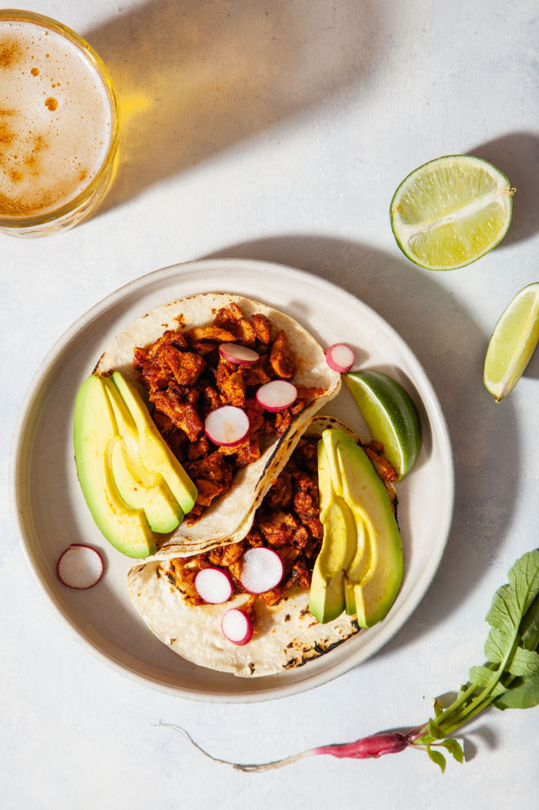

Chicken Tacos

Guajillo Chicken Taco Recipe
Authentic chicken tacos, marinaded in a Guajillo chile sauce
that is loaded with flavors and easy to make!
Ingredients:
- 1.5 lbs boneless chicken tighs
- 3 Dried Guajillo Peppers (stems and seeds removed)
- 1/2 White Onion (Halved)
- 6 Garlic Cloves (peeled)
- 1/4 Cup Apple Cider Vinegar
- 1 Tbsp Ground Cumin
- 1 Tbsp Ground Corriander
- 1 1/2 Tsp kosher salt (plus some to taste)
- 2 Tbsp Olive Oil
Steps:
- On a skillet over hight heat, toast dried chiles for
2 min on each side. Remove from heat and remove stems
and seeds. Place the chiles in a bowl and cover with
1 Cup of boiling water. Let them hydrate for 5 min.
- Reserving the water, add the hydrated chiles, onion,
vinegar, garlic, cumin, coriander, and salt to a blender.
Add 1/2 Cup of the reserved chile water. Blend until sauce
is puree.
- Place oven rack 6 inches from the top burner and preheat
broiler on high. Place chicken thighs in cast iron skillet,
and pour over the chile sauce, stir to combine. Once hot, broil
chicken on the top rack for 15-20min, or until tops are just
beginning to blacken.
- Remove from oven and chop chicken into small pieces. In a bowl,
dress them with 1/4 Cup chile sauce from the pan and toss to coat.
- Heat a large nonstick skillet over medium heat and add 2 Tbsp oil.
Add chicken, stirring frequently for about 5 min. Add the remaining
chile sauce to the skillet, toss, and remove from heat while you
warm tortillas.
- Serve immediately on warmed tortillas with your favorite toppings!
My favorite is chopped white onion, cilantro, and a hint of fresh lime!